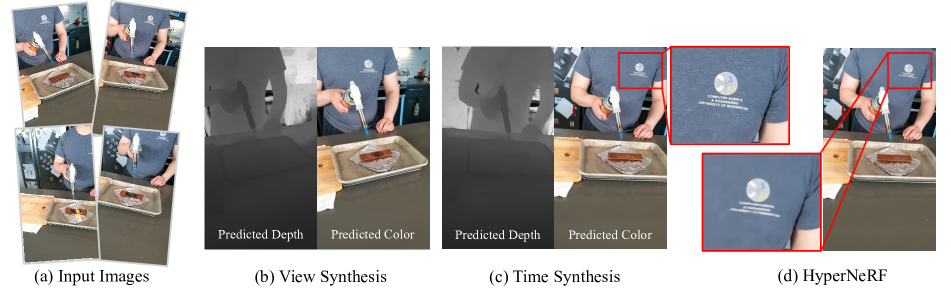
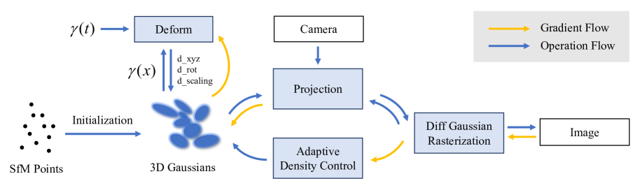
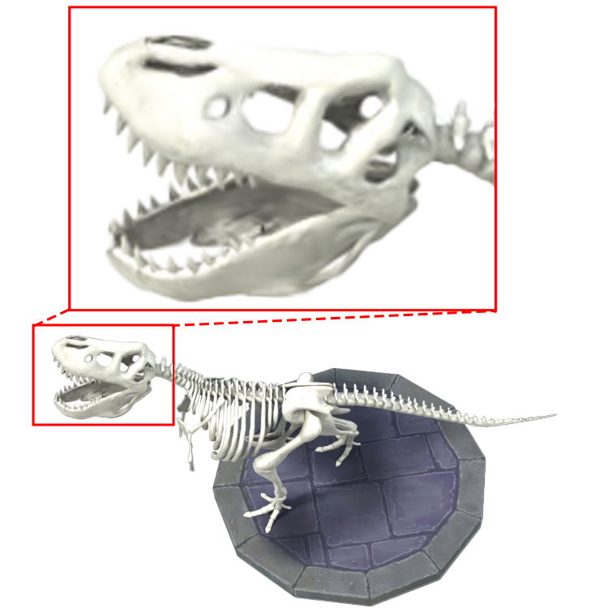
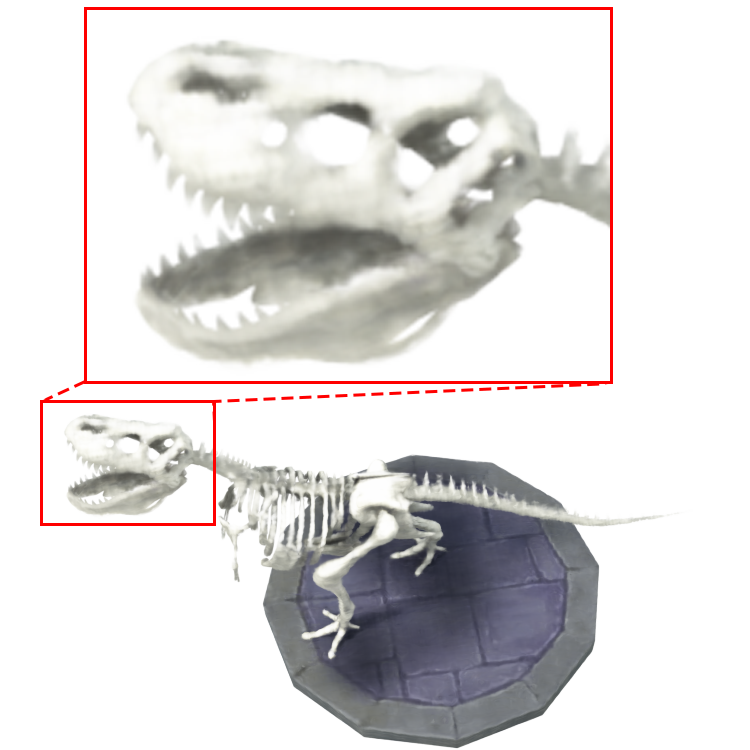
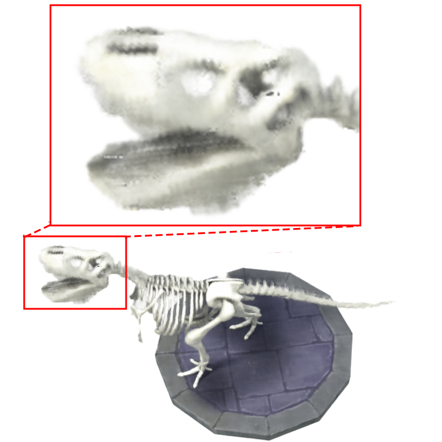
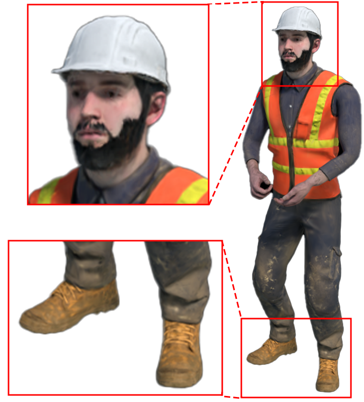
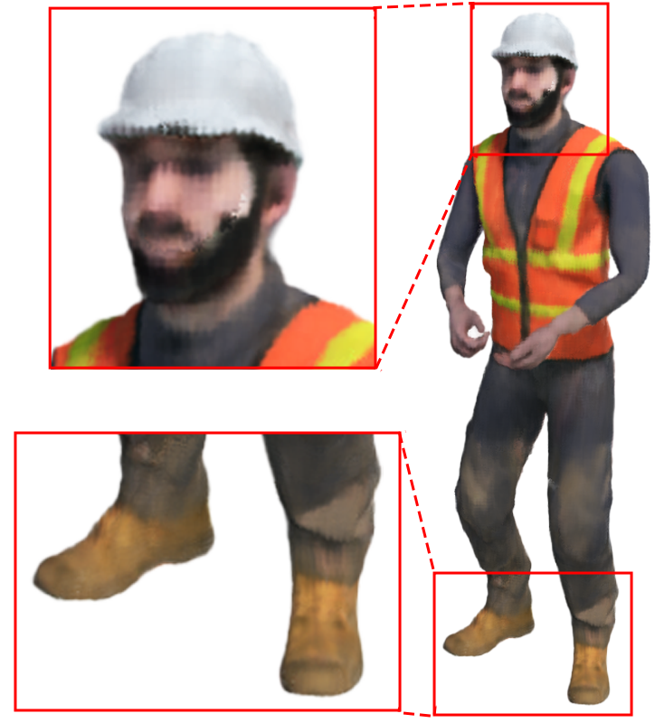

📌 论文概要
Deformable 3D Gaussians（简称 Deformable-3DGS）是将 3D Gaussian Splatting 扩展到单目动态场景重建的工作。核心思路：在规范空间（canonical space）中学习一组 3D 高斯，并通过一个变形场（deformation field）将规范空间的高斯映射到任意时间步，从而建模动态场景。
核心贡献：解决了隐式神经表示（如 D-NeRF）在动态场景中难以捕捉细节、无法实时渲染的问题。通过显式高斯表示 + 变形场，同时实现了更高的渲染质量和实时渲染速度。
| 属性 | 详情 |
|---|
| 机构 | 浙江大学 (Xiaogang Jin 组) / 腾讯 |
| 作者 | Ziyi Yang, Xinyu Gao, Wen Zhou, Shaohui Jiao, Yuqing Zhang, Xiaogang Jin |
| 开源 | 是（GitHub: ingra14m/Deformable-3D-Gaussians） |
| 基线对比 | D-NeRF, HyperNeRF, TiNeuVox, NeRF-Editing 等 |
| 评测数据集 | D-NeRF 合成数据集 + HyperNeRI 真实数据集 + Plenoptic 数据集 |
🏗️ 模型架构
架构由三个核心组件构成：
| 组件 | 功能 | 输入 | 输出 |
|---|
| 规范空间 3D 高斯 | 场景的静态几何+外观表示 | SfM 点云初始化 | 一组 3D 高斯（位置、协方差、颜色、不透明度） |
| 变形场网络 | 将规范空间映射到任意时间步 | 时间步 t + 高斯位置 x | 变形后的位置 Δx 和旋转 Δq |
| 可微光栅化器 | 渲染变形后的高斯到 2D 图像 | 变形后的 3D 高斯 + 相机参数 | 渲染图像 |
变形场网络设计

Figure 1: 给定一组单目多视角图像和相机位姿 (a)，本文方法可重建精确的动态 3D 模型 (b)，并支持实时渲染和新视角合成。

Figure 2: Pipeline 概览。优化过程从 COLMAP SfM 点云开始，作为 3D 高斯的初始状态。使用高斯位置 γ(x) (detached) 和时间编码 γ(t) 作为变形场网络的输入，输出位置偏移和旋转偏移。
- 输入：时间步编码 γ(t) + 高斯位置编码 γ(x)
- 网络结构：轻量 MLP（多层全连接 + ReLU）
- 输出：位置的偏移量 Δx 和旋转的偏移量 Δq（四元数）
- 设计理念：不变形高斯的颜色、不透明度、大小——这些属性在规范空间中定义，保持时间一致性。只通过位置和旋转的变形来建模动态
关键设计：高斯的颜色/不透明度/尺度在规范空间中是静态的，只有位置和旋转随时间变化。这确保了同一高斯始终代表同一物理点的外观，避免时间不一致。变形场是一个连续函数，可以对任意时间步插值（包括训练集中没有的时间点），实现时间插值任务。
与 3DGS 原始架构的关系
Deformable-3DGS 直接复用 3DGS 的可微光栅化器和自适应密度控制机制。核心扩展仅是增加了变形场网络，将静态高斯变为"规范空间高斯 + 时间变形"的组合。这种设计使得方法可以即插即用地继承 3DGS 的所有优势（实时渲染、显式表示、自适应密度控制）。
🎯 关键特性
- 高保真渲染：在 D-NeRF 和 HyperNeRF 数据集上 PSNR 显著优于 D-NeRF、HyperNeRF、TiNeuVox 等隐式方法
- 实时渲染速度：得益于 3DGS 的显式光栅化，达到实时帧率（远超隐式方法的逐像素 MLP 查询）
- 单目视频输入：仅需单目视频（不需要多相机阵列），适用于日常拍摄场景
- 时间插值：变形场是连续的，可以在训练帧之间插值，生成平滑的慢动作或补帧效果
- 退火平滑训练机制：解决真实数据集中位姿不准确导致的时间插值不平滑问题
- 新视角合成：从单目动态视频合成新视角
🔬 技术细节
变形场参数化
- 位置编码：使用多频位置编码 γ(x) = [sin(2⁰πx), cos(2⁰πx), ..., sin(2^(L-1)πx), cos(2^(L-1)πx)]，L=10
- 时间编码：同理 γ(t)，L=10
- MLP 结构：8 层全连接，宽度 256，ReLU 激活，skip connection 在第 4 层
- 输出：位置偏移 Δx ∈ ℝ³ + 旋转偏移 Δq ∈ ℝ⁴（四元数）
退火平滑训练机制（Annealing Smooth Training）
真实数据集（如 HyperNeRI）中，COLMAP 估计的相机位姿不准确，导致时间插值任务中出现抖动。解决方法：
- 核心思路：不直接从 t=0 跳到 t=T，而是逐步扩展训练时间范围
- 具体做法：训练初期只用部分时间范围 [0, Δt] 的帧训练，逐步扩展到 [0, 2Δt], ..., [0, T]
- 效果：让变形场先学习短时间运动模式，再逐步扩展到长时间运动，避免一开始就拟合不准确的位姿导致过拟合
- 无额外开销：不增加网络参数或计算量，仅改变训练数据采样策略
为什么需要退火：真实数据中位姿误差 → 变形场被迫"吸收"位姿误差 → 时间插值不连续。退火让网络先学简单（短时）的运动模式，建立稳定的几何基础后，再逐步处理长时间跨度的复杂运动。
训练流程
- 用 COLMAP 对输入视频做 SfM，得到相机位姿和稀疏点云
- 用稀疏点云初始化规范空间 3D 高斯
- 联合优化：高斯属性（位置/颜色/不透明度/协方差）+ 变形场网络参数
- 每轮迭代：采样时间步 t → 变形场计算 Δx, Δq → 光栅化渲染 → 与真实图像计算损失 → 反向传播
- 自适应密度控制：3DGS 的 clone/split/prune 机制在规范空间中操作
📊 基准表现
D-NeRF 合成数据集
| 方法 | PSNR ↑ | SSIM ↑ | 渲染速度 |
|---|
| D-NeRF | ~25 | ~0.80 | 慢（~0.4 FPS） |
| TiNeuVox | ~26 | ~0.83 | 慢 |
| Deformable-3DGS | ~29-31 | ~0.88-0.90 | 实时 |
在 8 个合成场景上全面领先，PSNR 提升 3-5 dB。



Figure 3 (部分): D-NeRF 合成数据集 trex 场景定性对比。从左到右：Ours / TiNeuVox / D-NeRF。Deformable-3DGS 在纹理和几何细节上明显优于基线方法。


Figure 3 (部分): stand 场景对比。左：Ours，右：D-NeRF。显式高斯表示在边缘清晰度和表面平滑性上均有优势。
HyperNeRI 真实数据集
在真实世界动态场景上同样优于 HyperNeRF 和其他基线方法，同时保持实时渲染速度。退火平滑训练机制在真实数据上发挥了关键作用。
Plenoptic 数据集
在多视角动态场景数据集上也验证了方法的有效性。
💡 个人分析
核心贡献与定位
Deformable-3DGS 是 3DGS 从静态走向动态的里程碑式工作。它建立了"规范空间 + 变形场"这一范式，后续大量 4D 高斯工作都沿用了这一思路。与 Dynamic 3D Gaussians (p21) 相比：
| 维度 | Deformable-3DGS | Dynamic 3D Gaussians (p21) |
|---|
| 变形建模 | 变形场网络（MLP） | 逐高斯运动轨迹 + 局部刚性约束 |
| 输入 | 单目视频 | 多视角视频 |
| 追踪能力 | 无显式追踪 | 6-DOF 密集追踪涌现 |
| 实时渲染 | ✅ | ✅ |
| 时间插值 | ✅（连续变形场） | 有限（离散帧） |
| 位姿鲁棒性 | 退火平滑训练 | 需要较准确位姿 |
优势
- 简单优雅：仅在 3DGS 上加一个轻量 MLP 变形场，改动最小但效果显著
- 连续时间插值：变形场是连续函数，可以生成任意中间帧
- 单目可用：不需要多相机阵列，普通手机拍摄即可
- 实时渲染：继承了 3DGS 的光栅化优势
局限
- 非刚性运动建模有限：变形场是一个全局 MLP，对所有高斯使用同一变形函数。对于人体手臂这种复杂铰接运动，单个 MLP 可能欠拟合
- 无显式运动先验：不引入人体骨骼/SMPL 模型，完全靠网络自由学习运动模式
- 长序列漂移：长时间视频中变形场可能出现漂移，导致时间一致性下降
- 单目深度歧义：单目输入存在深度歧义，变形场需要在多视角监督下学习，但真实单目视频中视角有限
- 规范空间假设：假设存在一个规范空间，但对于拓扑变化的场景（如人脱掉外套）不成立
与你的"围绕人物转圈"场景的关系
这个方法直接适用于你的场景——单目视频输入、人物有肢体运动、需要新视角合成。具体来说：
- ✅ 你用手机围绕人物转圈拍摄 = 单目动态视频输入
- ✅ 变形场可以建模手臂的运动（位置+旋转变形）
- ✅ 退火平滑训练处理位姿不准的问题
- ⚠️ 手臂的复杂铰接运动可能需要更强变形场（如分部件变形或引入骨骼先验）
- ⚠ 手臂快速运动导致的运动模糊仍是挑战
改进方向建议
- 分部件变形场：对人体不同部位（头、躯干、上臂、前臂、手）使用不同的变形场，增强表达力
- 引入 SMPL 先验：将变形场与 SMPL 骨骼参数结合，让高斯绑定到骨骼关节
- 结合 VGGT (p26)：用 VGGT 提供准确的深度和位姿估计，替代 COLMAP
- 结合 GEN3C (p27)：用 3D 缓存提供几何先验，变形场只需学习残差变形
📐 算法框图
请参考论文原文 Figure 2 (Method Overview)。流程简述：
Pipeline: 输入视频 → COLMAP 位姿估计 → 规范空间高斯初始化 → 变形场 MLP (输入: t, x → 输出: Δx, Δq) → 变形后的高斯 → 可微光栅化 → 渲染图像 → 与真实帧计算损失 → 反向传播优化高斯属性+变形场参数
核心组件：
- 规范空间 3D 高斯：静态几何+外观
- 变形场 MLP：时间→空间映射
- 可微光栅化器：3D→2D 渲染
- 退火平滑训练：渐进式时间范围扩展
- 自适应密度控制：clone/split/prune（在规范空间操作）
💡 核心创新点
- 规范空间 + 变形场范式：将动态场景重建分解为"静态几何"和"时间变形"两个子问题，建立了后续 4D 高斯工作的标准范式
- 退火平滑训练机制：无额外开销解决真实数据中位姿不准确导致的时间插值抖动问题
- 实时动态渲染：首次在动态场景重建中实现实时渲染速度（隐式方法如 D-NeRF/HyperNeRF 都无法做到）
- 高斯属性时间一致性：颜色/不透明度/尺度在规范空间中固定，只有位置和旋转随时间变化，确保外观一致
- 连续时间插值：变形场是连续函数，支持任意时间步的帧插值生成
🎯 应用场景
| 场景 | 输入 | 输出 | 说明 |
|---|
| 新视角合成 | 单目动态视频 | 任意视角视频 | 核心应用：围绕人物/物体转圈拍摄→合成新视角 |
| 时间插值 | 动态视频 | 中间帧 | 慢动作生成、帧率上转换 |
| 实时渲染 | 训练好的场景 | 实时视频流 | VR/AR 交互式动态场景浏览 |
| 4D 视频编辑 | 动态视频 | 编辑后视频 | 修改规范空间高斯 → 变形场自动传播到所有时间 |
🏋️ 训练策略
- 初始化：COLMAP SfM 得到相机位姿 + 稀疏点云 → 初始化规范空间高斯
- 联合优化：高斯属性（位置/颜色/不透明度/协方差/球谐系数）和变形场 MLP 参数同时优化
- 退火调度：训练时间窗口从 [0, Δt] 逐步扩展到 [0, T]，Δt 随训练步数线性增长
- 自适应密度控制：3DGS 的 clone/split/prune 在规范空间操作，基于梯度信号
- 训练时长：与 3DGS 相当（~30 分钟级），远快于 D-NeRF（数小时）
注：论文未提供详细的超参数表（学习率、batch size、训练步数等）。如需复现请参考开源代码和论文 Section 3。
📊 数据集构建
| 数据集 | 类型 | 场景数 | 特点 |
|---|
| D-NeRF | 合成 | 8 | 已知位姿和深度 GT，简单刚体运动 |
| HyperNeRI | 真实 | 多场景 | 真实拍摄，COLMAP 位姿，复杂非刚体运动 |
| Plenoptic | 真实 | 多场景 | 多视角动态场景，可做更严格评测 |
评测指标：PSNR, SSIM, LPIPS。渲染速度：FPS。
📐 损失函数
继承 3DGS 的损失函数设计，在渲染图像和真实图像之间计算：
- 光度损失：L_photo = (1 - λ) · L1(I_render, I_gt) + λ · D-SSIM(I_render, I_gt)
- λ 通常设为 0.2（与 3DGS 一致）
- 无额外正则化损失：变形场本身不添加显式正则化（如刚性约束、运动平滑性约束等），退火训练替代了显式正则化的作用
与 Dynamic 3D Gaussians (p21) 的对比：p21 使用局部刚性约束作为正则化损失。Deformable-3DGS 不使用显式运动约束，而是通过退火训练策略隐式地引导平滑运动。这是两种不同的解决思路——显式约束 vs. 隐式训练策略。
🔄 技术路线对比与演进
动态场景重建方法对比
| 方法 | 表示 | 变形建模 | 输入 | 实时渲染 | 时间插值 |
|---|
| D-NeRF | 隐式 (MLP) | 规范空间 + 变形 MLP | 多视角 | ❌ | ✅ |
| HyperNeRF | 隐式 (MLP) | 规范嵌入 + 外观网络 | 多视角 | ❌ | 有限 |
| TiNeuVox | 隐式 (Voxel) | 时间体素 | 多视角 | ❌ | 有限 |
| Deformable-3DGS | 显式 (高斯) | 规范空间 + 变形 MLP | 单目 | ✅ | ✅ |
| Dynamic 3D Gaussians (p21) | 显式 (高斯) | 逐高斯运动 + 局部刚性 | 多视角 | ✅ | 有限 |
演进脉络
- 隐式动态重建：D-NeRF (2021) → HyperNeRF (2021) → TiNeuVox (2022) — 质量尚可但速度慢
- 显式动态重建：3DGS (2023.08) → Deformable-3DGS (2023.09) → Dynamic 3D Gaussians (2023.08) → 4DGS 后续改进
- Deformable-3DGS 的历史地位：它是"规范空间+变形场"范式从隐式表示迁移到显式高斯表示的开山之作。D-NeRF 用的是这个范式但用 MLP 表示场景，Deformable-3DGS 把场景表示换成 3D 高斯，一举解决了渲染速度和质量问题
与知识库相关论文的关系
- → 3DGS Survey (p20)：Deformable-3DGS 是 3DGS 向动态扩展的核心分支之一
- → 4D Dynamic Gaussians (p21)：同一时期的并行工作，思路互补。Deformable 用变形场，Dynamic 用逐高斯运动+刚性约束
- → VGGT (p26)：VGGT 可提供更准确的深度和位姿，替代 COLMAP，改善 Deformable-3DGS 在真实数据上的位姿精度问题
- → GEN3C (p27)：GEN3C 的 3D 缓存思路可视为 Deformable-3DGS 变形场的离散化版本——缓存提供几何骨架，扩散模型补全外观
- → Cosmos 3 (p01)：Cosmos 3 的世界模型可以生成动态场景的后续帧，与 Deformable-3DGS 的重建+变形场形成"生成 vs 重建"的互补路线
后续影响
Deformable-3DGS 的"规范空间+变形场"范式被大量后续工作继承和改进：
- 4DGS：在变形场中引入更多物理约束
- SPA-Deformable-3DGS：球谐参数化变形场
- 多规范空间方法：处理拓扑变化场景
- 前馈变形场：从视频直接预测变形场参数，避免 per-scene 优化